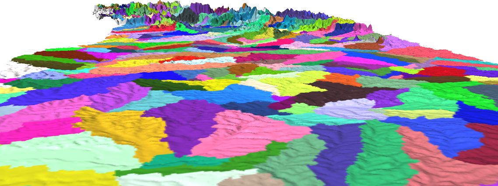
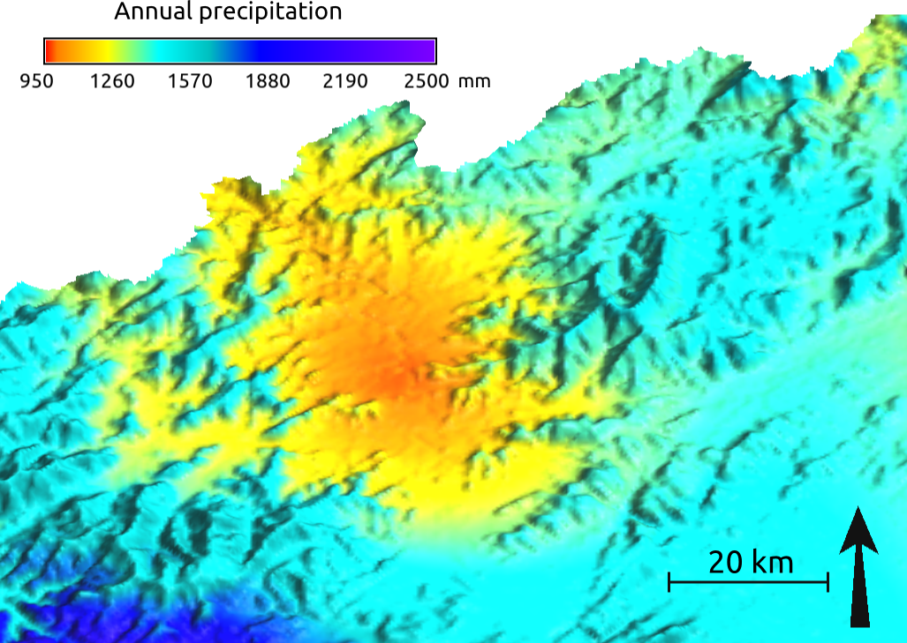
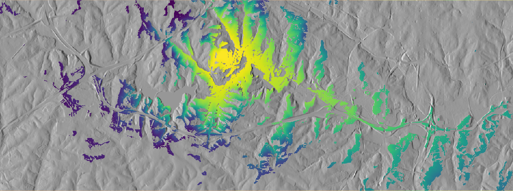
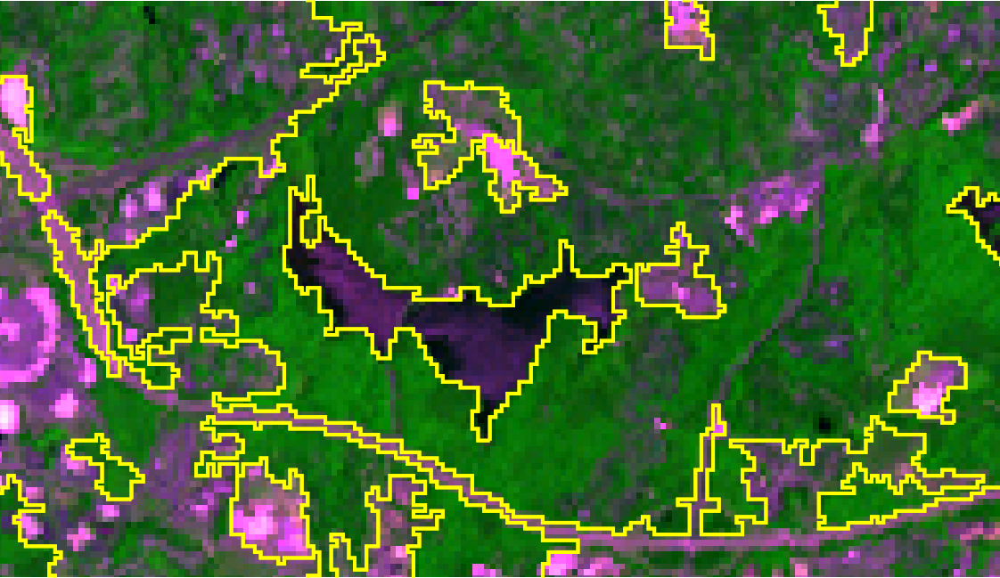
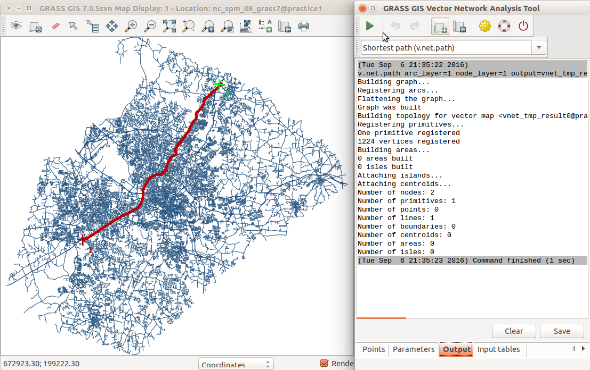
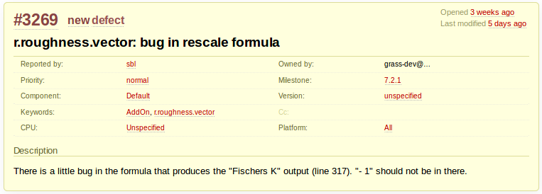
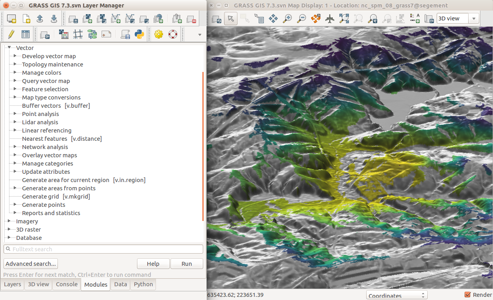
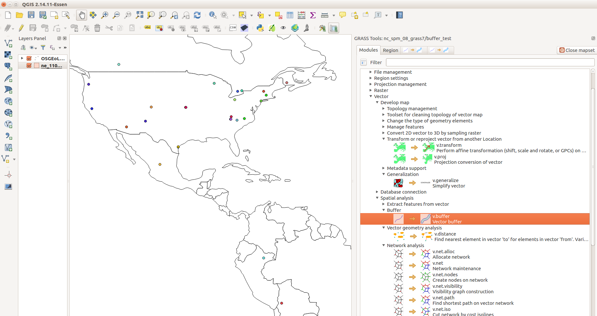
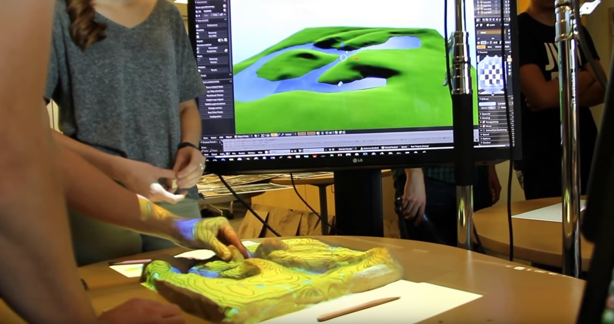

33 years of
GRASS GIS
as an innovation platform
Vaclav (Vashek) Petras
30th NCGIS, Feb 22-24, 2017, Raleigh NC
The beginning
- 1980-1982: Ideas, predecessors and prototypes
- 1983: First reference manual published
-
1985: Geographic Resources Analysis
Support System 1.0 released

Let William Shatner do the introduction
see full 15 min video at
av.tib.eu/media/12963
GRASS GIS now

GRASS GIS
- over 30 years of development

GRASS GIS
- general purpose spatial analysis and remote sensing software
- powerful 2D/3D raster, imagery and vector processing
- single/complete integrated software

GRASS GIS
- GUI, CLI, Python API, C API
- backend processing for QGIS, R, ..., OpenDroneMap

GRASS GIS
- free
- use when you need, pay when you can
- zero license cost, no license servers
- user-driven development
- users directly interact with developers
Old Innovations Are Still Serving Now
* The list is incomplete.
Solar radiation modeling
- available for about 20 years
- renewed multiple times
- major changes in 1996, 1999, 2002, 2003, 2006, 2008
- parallelized version coming in 7.4
summer solstice dynamics on lidar DEM

Watersheds and stream extraction
- first worldwide map of watersheds derived from a global DEM
- unique least cost path algorithm (1989)
- no depression filling needed
- updated for massive data sets (2011)

Vector topology cleaning
- introduced in 2002
- continuous improvements

3D view
- visualization and analytical visualization
reviewing UAV fligh path

Multivariate splines
- 2D, 3D and 4D interpolation with tension
- simultaneous topographic analysis
(gradients, curvatures)
- parallelized version coming in 7.4
(useful for lidar)
- fast spline interpolation as an addon

64bit version
- since 2005 on Linux, Mac, Unix
- can use more than 4GB RAM
- long established 64bit
(nobody even talks about it)
- since 2016 on MS Windows
- also: large file support
even on 32bit MS Windows
Operating system support
- Windows, Mac, Linux
- FreeBSD, IBM AIX, ...
- running on
- High-Performance Computing clusters
- license does not limit number of cores or users
- Raspberry Pi
GUI on Ubuntu
Innovation with stability
2002 code in 2017?
- Command line code with raster algebra
- from the 1st edition of the "GRASS book"
(Neteler, Mitasova)
- for version 5 pre-release, 2002
r.mapcalc depr.bin="if((elev - fill)< 0., 1, 0)"
Return of investment
version 5 pre-release and works as is in 7.2:
r.mapcalc depr.bin="if((elev - fill)< 0., 1, 0)"
better:
r.mapcalc "depr_bin = if((elev - fill) < 0., 1, 0)"
Replaced module
- r.los replaced by r.viewshed in 7.0
- r.viewshed much faster than r.los
- existed together for some time in 6.x
- r.los still available in Addons

Geomorphons
- landform detection
- basic landforms extracted for the entire US
- by Spatial Informatics Laboratory, University of Cincinnati

Image segmentation
- created during Google Summer of Code 2012
- greatly improved in 2013 (at GRASS GIS Community Sprint)
- ...
- 4 other developers contributed in 2016

Spatio-temporal Framework
- space and time for 2D, 3D rasters and vectors
- animation, plot one place over time, query, aggregation,
conversion, statistics, gap filling

Vector network analysis
- 2003: shortest path, traveling salesman, ...
- 2009: centrality measures, connected components, ...
- 2014: turn cost in network nodes

Link to research papers

Public author & accessible code

Discussions archived

since 1991
Addons repository
- user contributed modules, plugins, tools, functions
- almost 300
- distributed to users
- including compiled C and C++ for MS Windows
- automatically generated GUI
for Python and C/C++

User-reviewed implementation
- user tested the module
- discovered error in equation in code

Reduced limits
- "people limited by tools" issue
- GRASS GIS covers many fields
- for example, no borders between remote sensing and vector network analysis

Command Line Interface
r.fill.dir input=elev output=fill direction=dir
scripting with shell, Bash, cmd.exe, ...
Graphical User Interface

Graphical Modeler

Python
- since Python existed (90s)
- API and use in GRASS GIS itself in 2008
- grass package part of GRASS GIS
- access to GRASS GIS C functions and objects
import grass.script as gs
gs.run_command('r.fill.dir', input='elev',
output='fill', direction='dir')
Python
- since GRASS GIS 7.2 also integrated editor

R
- rgrass7 package
- not part of GRASS GIS but well established
- also accessible through RQGIS
execGRASS("r.fill.dir", input = "elev",
output = "fill", direction = "dir")
Other languages
- C
- used by GRASS GIS itself
- works for C++
- Perl
- PHP
- Java (JGrasstools, gvSIG)
- Web Processing Service (ZOO or PyWPS)
- Jupyter (methods, code and results together)
- Ruby (dedicated interface: grassgis gem)
r.fill.dir input: 'elev', output: 'fill',
direction: 'dir'
QGIS Processing Plugin
- access to most of GRASS GIS modules
- unified interface to GDAL, SAGA, OTB, ...
- Python interface as well

QGIS GRASS Plugin
- access to almost all of GRASS GIS modules
- seamless integration with GRASS GIS native database
- includes also CLI (GRASS shell)

GRASS GIS in Cloud
- GRASSLinks: A WWW interface to GIS (1994-1998)
- Secure Shell (since 1995)
- client-server
- HPC clusters
- ...
- ESA PROBA-V Mission Exploitation Platform
- rollApp *rollApp.com
- GRaaS (GRASS GIS as a Service) *mundialis.de
Command Line

Command Line

Tangible Landscape
a tangible user interface

GRASS GIS 7.2 and ongoing work
Temporal Algebra
- temporal buffers, overlays, relations, operators
- includes spatial 2D raster, 3D raster and vector algebra
- operates on time series
(e.g. of climate data)
- prototype available in 2013, full version in 7.2
D = if(start_date(A) < "2005-01-01", A & B)

Hydro-thermal coefficients for 2003 and 2007 for Germany
(image from Leppelt and Gebbert, 2015)
FUTURES
urban growth modeling

projected development around Asheville, NC
(research at NC State University, Center for Geospatial Analytics)
Default Color Table
Perceptually uniform — viridis
following Matplotlib

viridis and rainbow and their luminance
Itzï
flood simulation

June 2007 floods in the city of Hull, UK,
image from itzi.org
SLIC Superpixels

SLIC: Simple Linear Iterative Clustering
SLIC Superpixels

SLIC Superpixels
5 months later

SLIC Superpixels